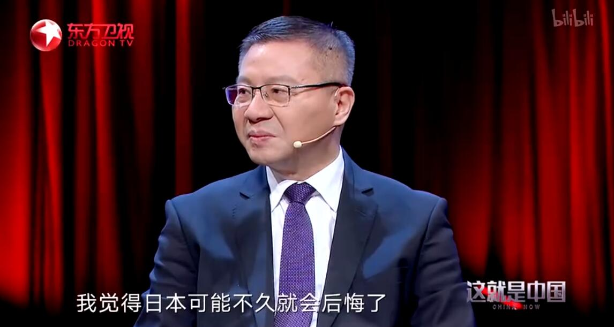

播出信息

播出平台
东方卫视
收视率
截至2019年8月的数据显示，《这就是中国》在YouTube上线以来，视频总观看次数超过340万，总观看时长达6000万分钟，海外传播覆盖区域达233个国家和地区，其中海外观看时长美国及香港地区排名前二，美国的观看时长占22%，香港地区占9.1%
截至2021年6月2日，《这就是中国》在哔哩哔哩视频上的播放量达到4094.5万次，评分达9.1分；在抖音平台的官方账号“这就是中国”上，单条短视频获得高达14.5万的点赞量。此外，节目也在海外播出平台上线100期节目，覆盖人群超7亿人
2022年1月，《这就是中国》播出“迈向共同富裕”“‘世界民主峰会’喜剧还是闹剧”“西方民主出了什么问题”“哈萨克斯坦的‘颜色革命’”4期，稳居同时段地方卫视节目收视率前2，每期平均收视率0.356%，较上月小幅上涨5.6%。其中，“‘世界民主峰会’喜剧还是闹剧”1月10日播出，收视率0.474%，居同时段地方卫视节目收视率第1。